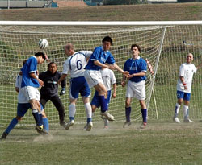

|
Misato, Sun 22nd Oct. It's been a while but WSG finally managed to get a full team out for the first time this season, and what a difference a good squad can make. WSG opened the scoring on the 20-minute mark after Mikkel Troen went on a run in the 18 yard box, having gone past about 5 challenges he was brought down in the area. Taking the penalty himself he made no mistake from the spot.
WSG kept on the attack and really should have been at least 3 up at half time having squandered a few chances, which may have been attributed to the bobbly conditions on the Misato grass.
After the restart WSG continued to press and should have added to the total well before they did. They finally got the second in the last minute of the 2nd half following some good movement from WSG and a rifling shot from the outstanding Mikkel which could only be parried by the Jets keeper. Geckoes Simon Hiscocks was on hand to tie the game up with a simple tap in . Sorry allow me to type the words Good and Movement again, not often that particular combination of words shows up in a WSG match report!!. That was pretty much it for the Jets and only some unlucky finishing earlier in the 2nd half kept the total score line at 2-0. All in all a great team performance from WSG, with keeper Rob not having to make a save throughout the match thanks largely to a solid defensive performance.
Man of the match was Mikkel, but special mentions for Masa and Tom on their debuts in what was clearly the best Geckoes team performance for a long time.
Report by Gary Stout
|